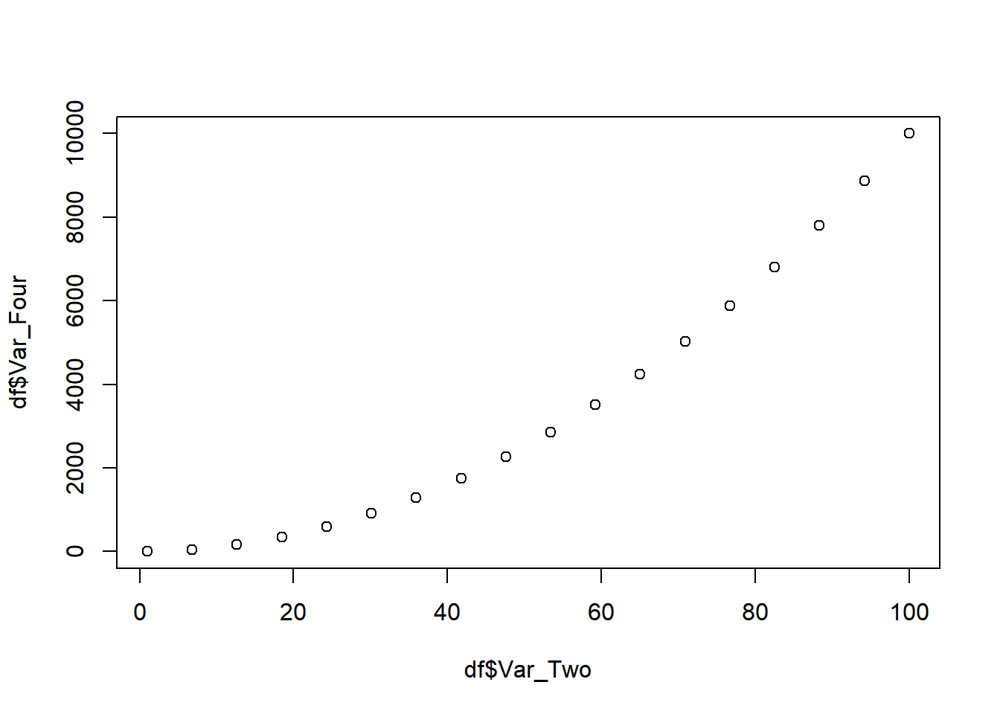
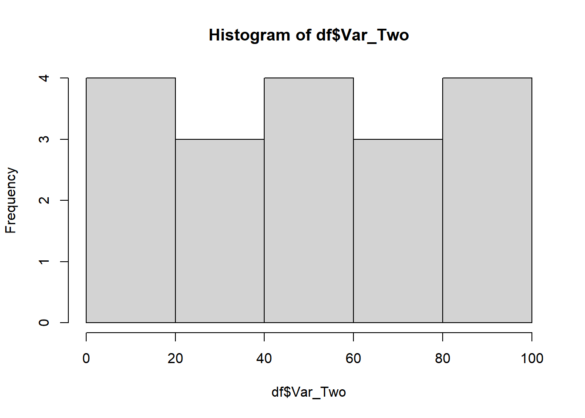

Какой параметр функции metaMDS() отвечает за выбор меры
индекса разлчия между сравниваемыми объектами.
Напишите код, который позволит найти решение этого примера
\[ \log_2 \left(\frac{2 \cdot arcsin(\sqrt{0.5}) \cdot \frac{180}{\pi}-\sqrt[4]{11} }{(10 + e^2) \cdot 50}\right) = \]
Cкачайте к себе на компьютер датасет catsM.xlsx. Поместите его в папку “data”.
Скопируйте приведнный ниже код в окно скрипта RStudio.
Перепишите код так, чтобы он полностью выполнялся (надо расставить строки в правильном порядке).
Если все правильно, то после выделения всех строк кода и нажатия Ctrl+Enter должно все работать без сообщения об ошибках.
Суть происходящего в этом коде совершенно не важна, важно, чтобы все работало.
Выполните следующий код
Напишите код, который даст следующие характеристики полученного вектора.
Скопируйте и выполните код, который создаст датафрейм под названием
df
Это абсолютно бессмысленный, учебный, набор данных!
df <- data.frame(Var_1 = rep(letters[1:9], each =2), Var_2 = seq(1, 100, length.out = 18), Var_3 = NA)
df## Var_1 Var_2 Var_3
## 1 a 1.00 NA
## 2 a 6.82 NA
## 3 b 12.65 NA
## 4 b 18.47 NA
## 5 c 24.29 NA
## 6 c 30.12 NA
## 7 d 35.94 NA
## 8 d 41.76 NA
## 9 e 47.59 NA
## 10 e 53.41 NA
## 11 f 59.24 NA
## 12 f 65.06 NA
## 13 g 70.88 NA
## 14 g 76.71 NA
## 15 h 82.53 NA
## 16 h 88.35 NA
## 17 i 94.18 NA
## 18 i 100.00 NA
Примечание: Обратите вниание, что в данном случае мы не
получили данные извне, а создали датафрейм прямо в коде скрипта,
использовав функцию data.frame(). Это бывает необходимо для
создания таблиц при написании документов.
Напишите код, который изменит названия переменных следующим образом
## Var_One Var_Two Var_Thr
## 1 a 1.00 NA
## 2 a 6.82 NA
## 3 b 12.65 NA
## 4 b 18.47 NA
## 5 c 24.29 NA
## 6 c 30.12 NAНапишите код, который выберет из датафрейма df только те
строки, в которых переменная Var_One принимает значения
i, c, f.
Должен получиться вот такой результат
## Var_One Var_Two Var_Thr
## 5 c 24.3 NA
## 6 c 30.1 NA
## 11 f 59.2 NA
## 12 f 65.1 NA
## 17 i 94.2 NA
## 18 i 100.0 NAНапишите код, который выберет из датафрейма df только
переменные Var_One и Var_Thr
Должен получиться вот такой результат (возможно несколько решений)
## Var_One Var_Thr
## 1 a NA
## 2 a NA
## 3 b NA
## 4 b NA
## 5 c NA
## 6 c NA
## 7 d NA
## 8 d NA
## 9 e NA
## 10 e NA
## 11 f NA
## 12 f NA
## 13 g NA
## 14 g NA
## 15 h NA
## 16 h NA
## 17 i NA
## 18 i NAНапишите код, который добавит в датафрейм переменную Var_Four, которая будет равна квадрату значений переменной Var_Two. Должен получиться вот такой результат.
## Var_One Var_Two Var_Thr Var_Four
## 1 a 1.00 NA 1.0
## 2 a 6.82 NA 46.6
## 3 b 12.65 NA 159.9
## 4 b 18.47 NA 341.2
## 5 c 24.29 NA 590.2
## 6 c 30.12 NA 907.1
## 7 d 35.94 NA 1291.8
## 8 d 41.76 NA 1744.3
## 9 e 47.59 NA 2264.6
## 10 e 53.41 NA 2852.8
## 11 f 59.24 NA 3508.8
## 12 f 65.06 NA 4232.7
## 13 g 70.88 NA 5024.3
## 14 g 76.71 NA 5883.8
## 15 h 82.53 NA 6811.1
## 16 h 88.35 NA 7806.2
## 17 i 94.18 NA 8869.2
## 18 i 100.00 NA 10000.0Постройте вот такую точечную диаграмму

Постройте вот такую гистограмму

Сохраните датафрейм df себе на компьютер в формате .csv
и в формате .xlsx.